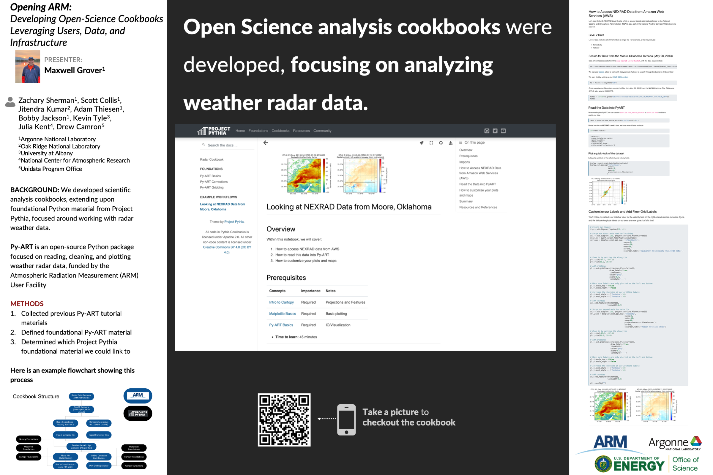

Earthcube Annual Meeting Takeaways#
Last week, I attended the Earthcube Annual Meeting in San Diego, California!
What’s Earthcube? Why did I go?#
Earthcube is an organization, funded by the National Science Foundation, which is focused around facilitating communities and practices related to geoscience data and cyberinfrastructure (the computers + software needed to get science done). From their official information page:
“For nearly a decade, the EarthCube community has been transforming the conduct of geosciences research by developing and maintaining a well-connected and facile environment that improves access, sharing, visualization, and analysis of data and related resources. While sharable tools, methods, and cyberinfrastructure have been critical achievements for EarthCube, we find that our dedicated community is what makes our program successful.”
They have an annual meeting, which was held virtually the past two years due to the global pandemic, with this being the first in-person meeting since 2019. I have been an active contributor to one of their related projects, Project Pythia, which is an commmunity resource for learning how to get started with Python for the geosciences.
Here is an image from the conference venue, the Scripps Institution of Oceanography.

What did I present?#
I presented on progress related to a collaboration with Project Pythia at the Atmospheric Radiation Measurement (ARM) user facility, our Radar Cookbook! The cookbook expands upon the Pythia Foundations material, covering more advanced topics related to working with open weather radar data using open source Python tools, specifically Py-ART!
The Radar Cookbook Poster#
Here is the poster I presented:

If you are interested in checking out our radar cookbook, here is the link:
The poster presentation went great and I received quite a bit of positive feedback in addition to some possible collaborations with other members of the geoscience community.
How was San Diego?#
The conference was on the Northside of San Diego, specifically in La Jolla at the Scripps Seaside Forum. I can honestly say that this was the most beautiful conference venue I have ever seen. Here is a picture of the tables set outside for breakfast every morning.

We were blessed with fantastic weather the whole week (except for a bit of mist on the way from the airport to the hotel on the first day). This allowed us to eat outside for all of our meals, keep doors and windows open to enhance airflow, and generally convene in a healthy COVID-preventative environment. I am thankful the conference organizers and attendees took COVID precautions seriously.
I had a chance to check out some local restaurants, including the Shore Rider in La Jolla Shores and Dukes in downtown La Jolla. Both places had incredible seafood, which I don’t eat too often in the Midwest!
What were my main takeaways from the meeting itself?#
While I could likely assemble several pages of takeaways from the conference, here are four(ish) main points and resources
Eathcube has been around for a while, and has enabled an incredible community of both domain scientists and cyberinfrastructure folks
Tracking metadata and connecting data is tough - there are so many ongoing projects and efforts to make this easier, with one of the main being the Geocodes Project
Another neat project is the Data Commons project, another large collaboration mainly focused on Census, climate, and other geographic data sources
With Earthcube winding down (this is the last year of NSF funding), best practices and lessons learned are being assembled, with most notes going into the sustainability document
Earthcube Sustainability Document
One of the main innovations to come out of Earthcube is the idea of (Jupyter) Notebooks as Scholarly Publishing, including a well-developed review process and collaboration with AGU and other societies. Here is a link to this year’s accepted submissions hosted on Github:
I very much enjoyed the format of the meeting, with a good mix of conference-style talks, workshops, and networking opportunities. I hope other conferences will take a look at their schedule (Earthcube Annual Meeting 2022 Schedule) and consider structuring theirs in a similar way!
Conclusions#
Last week’s conference was amazing. Even though I am not funded by an Earthcube related project, it was a fantastic place to present our progress on radar cookbooks, and how ARM + DOE fits into this space. We are fortunate to have our ARM data portal, which adheres to the FAIR (Findable, Accessible, Interoperable, and Reproducible) guidelines, and support for software development related to working with these datasets. I hope to connect more with the Earthcube community, making our resources findable on their tools (such as geocodes).I look forward to making more progress on our Open Science cookbooks, enabling more science in our community!